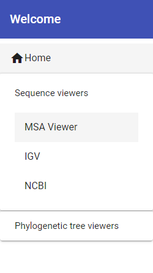

Ayuda BCS TUI
- Cómo trabajar con BCS TUI:
Haz click para seleccionar una de las herramientas disponibles en BCS TUI

Selecciona la categoría de visores secuenciales o visores de árboles y luego elige la herramienta deseada.
En caso de error o fallo al presentarse este menú, por favor refiérase al manual de instalación y de usuario para confirmar que ha realizado la instalación correctamente.
En caso de error al cargar o utilizar alguna de las herramientas, le facilitamos la ayuda correspondiente a cada una de ellas:
- MSA: Esta herramienta cuenta con su propio botón de ayuda integrado en el botón de "Help" ubicado en la barra de herramientas superior, en caso de error a cargar la herramienta facilitamos su enlace de ayuda para solventar cualquier problema: https://github.com/wilzbach/msa/wiki
- IGV: Para cualquier error con esta herramienta, por favor refiérase a su wiki en GitHub o a su página oficial:
- NCBI: Para cualquier error con esta herramienta, por favor refiérase a la sección de ayuda de su página oficial: https://www.ncbi.nlm.nih.gov/tools/sviewer/
- Auspice: Para dudas respecto al uso de esta herramienta puede utilizar los botones con "?" que hay al lado de cada campo de la herramienta, al mantener el ratón por encima del botón aparecerá un diálogo flotante explicando el campo en cuestión. Para cualquier error con esta herramienta, por favor refiérase a la documentación de instalación, uso y ayuda que se encuentra en su web: https://docs.nextstrain.org/projects/auspice/en/latest/index.html